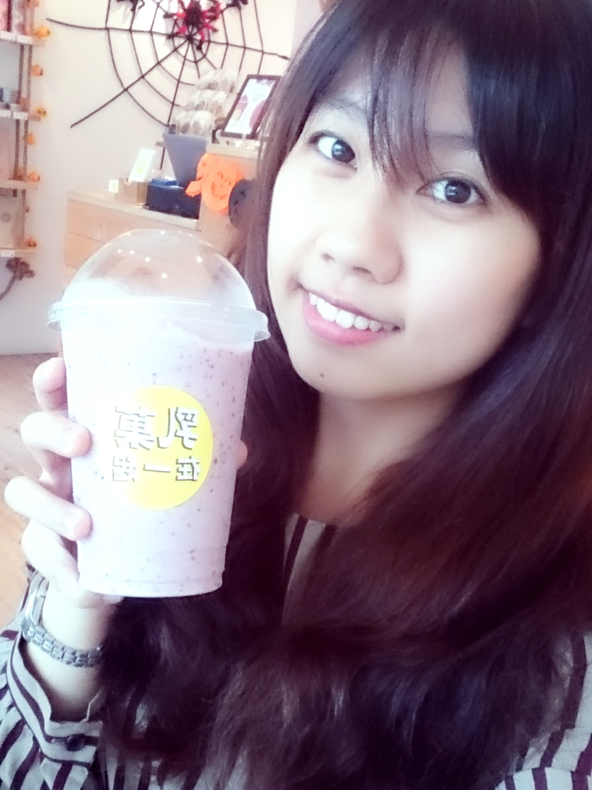

 |
自我介紹
|
Q1：Why Microsoft Student Partner？自己的未來 自己拚！在這裡，有其他地方碰不到的東西！！1. 一起奮鬥向上的夥伴 2. 多元不設限的學習環境 3. 眾多資源及廣大的舞台 在聽聞這個MSP團隊與計畫之後，第一個讓我眼睛為之一亮的點就是Partern！ 很喜歡有共同目標、為自己的未來打拼的感覺 第二個是，多元學習！ 對於好奇心比較重的我來說，很多事情都想嘗試 這份實習，不同於其他的打工或實習，而是很有空間讓我們自由學習發展 不只有很多的資源，還提供很大很廣的舞台 所以，我選擇了這裡 → Microsoft Student Partner！ |
Q2：這一年，想在微軟學到什麼？1. Coding的進步→自助，助人2. 行銷、企劃 3. 主辦活動 希望有一天我也能有能力去幫助、教導跟我一樣曾經很害怕、想不通程式邏輯、不了解系統、科技的人，用最簡單的語言帶領他們不只是聽懂我想表達的東西，而是會操作甚至是真正的了解這些東西如何使用、為自己的生活帶來什麼便利也為他們建立信心能在資訊這條路上繼續走下去且獲得自己真正想要的！！ |
Q3：一年過後，我想成為怎樣的人？1. 更有自信2. 更清楚自己的未來走向 3. 更擅長溝通、分享 4. 面對問題，不畏懼挑戰！ 5. 善於溝通教導、能協助別人解決困難 |
關於打工打工，從來不是隨便找找，而是很久之前就規劃好的「口袋名單」，會選擇王品、星巴克，不只是想去學他們的技術，還有他們的組織營運及制度規範。成功，不是沒道理的，而他們成功的點，你看到了嗎？當然從中也有遇到過挫折，如何克服真的是一大考驗，尤其當打工跟課業2頭燒的時候，面對挫折，找到問題點，思考有無解決方法，再不行，尋求協助，別人的經驗分享，不同觀點溝通，就是你進步的契機！對於放棄，我覺得，在放棄之前，可以問問自己：你，試著解決過了嗎？試了幾次？因為對我來說，要放棄一件事不是那麼容易的事，沒試過，就放棄，連自己都說服不了，所以，盡全力去做吧！沒嘗試過，不要說你不行！ |
關於態度對我來說，事情可以不會做，但不能沒有態度！我認為，做任何事都一樣，每個人本來就不是什麼都會做，不會做，可以問、可以學、可以慢慢跟，但積極、堅持、負責的態度，我覺得是不能少的！ 成品不一定總要最完美，但一定要竭盡所能去完成。我相信，在這其中除了完成後的成就感，得到更多的是過程的成長與進步，還有其中的回憶與不後悔。 |
資管一路走來遇到的瓶頸進了資管系之後，感覺是進入了一個之前都沒想過的專業領域，在其中是好多我之前完全沒有想過的世界。在程式的學習上，對我來說有一定的難度與困難點在，雖然總是跟得比較吃力，到處請教師長、同學，也不可否認在中途曾有過想放棄的想法，但卻還是相信這樣慢慢跟慢慢跟，總有一天我也能變得愈來愈強，強到能幫助別人，增強其他跟我一樣這樣辛苦走過來的人的信心，我相信，撐過去、海闊天空之後，就是你的了！ |